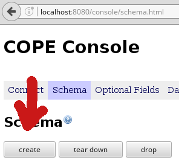
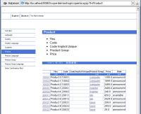
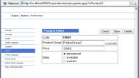

Web Application Trail
exedio persistence itself doesn't care, whether it runs in a web container or not. However it provides some additional convenience, when used within web applications.
If you already decided to use exedio persistence for a project,
you may want to use the demo application as a template.
This way you can skip the steps described here.
The demo application is available under the
The MIT License.
Download
Contents
Connecting
The framework must be told, where to connect to the database. Within a servlet you probably want to do this in the init() method. The file cope.properties should be in the WEB-INF subdirectory to protect it against client access. So you will probably want to write something like this:
public void init() throws ServletException
{
Main.model.connect(
new ConnectProperties(
new File(getServletContext().
getRealPath("WEB-INF/cope.properties"))));
}
For your convenience, there is a helper method, which does just that:
public void init() throws ServletException
{
ServletUtil.connect(Main.model, getServletContext());
}
Even this can be ommitted, if you use the CopeFilter explained below. Please note, that connect is idempotent, it doesn't hurt to call it more than once, for example if you have more than one servlet.
Transactions
From the Transaction Trail you already know, how to use transactions with exedio persistence. With a single servlet you may want to write something like this:
protected void doGet(
HttpServletRequest request,
HttpServletResponse response)
{
try
{
Main.model.startTransaction();
...
Main.model.commit();
}
finally
{
Main.model.rollbackIfNotCommitted();
}
}
However, this is not always feasible. Sometimes you just don't have a single servlet (or a small number of servlets) in your application. Even worse, the method doGet could be called reentrantly. This is very common when using the struts framework.
A nice solution for both problems is delegating the transaction handling into a filter. Class CopeFilter provides such a filter. It must be deployed in your web.xml:
<filter> <filter-name>CopeFilter</filter-name> <filter-class>com.exedio.cope.util.CopeFilter</filter-class> <init-param> <param-name>model</param-name> <param-value>com.exedio.copedemo.Main#model</param-value> </init-param> </filter> <filter-mapping> <filter-name>CopeFilter</filter-name> <url-pattern>*.do</url-pattern> <dispatcher>REQUEST</dispatcher> </filter-mapping>
The example above applies the filter for all request to *.do, a typical setting for struts. It assumes, that the main class resides in package com.exedio.copedemo, please adapt this to your package.
As a side effect, the CopeFilter connects the model in its own init(), so you don't have to care about it anymore.
exedio console
When you start up your web application, you have to create the database schema at least once. This is done by calling Main.model.createDatabase(). Instead of putting a button somewhere in a jsp of your application, you can use the exedio console, which assists you in creating/dropping/revising the database schema and more.
On the right you see the relevant part of the exedio console. The button create creates the database schema, the button drop drops it.
To deploy the exedio console in your application, put the file exedio-cope-console.jar into your WEB-INF/lib directory. Then you just mount another servlet within your web.xml:
<servlet>
<servlet-name>console</servlet-name>
<servlet-class>com.exedio.cope.console.ConsoleServlet</servlet-class>
<init-param>
<param-name>model</param-name>
<param-value>com.exedio.copedemo.Main#model</param-value>
</init-param>
</servlet>
<servlet-mapping>
<servlet-name>console</servlet-name>
<url-pattern>/console/*</url-pattern>
</servlet-mapping>
Note, that the trailing "/*" in the url-pattern is mandatory, otherwise the servlet cannot deliver it's resources (style sheet etc).
Copernica
 {kind=link}
{kind=link}
Copernica is an experimental generic backoffice for exedio persistence. It allows the user to query and manipulate the data stored in a model.
Although Copernica is still in a very early stage of development, it already allows access to the persistent data suitable for development and debugging.
Deploying Copernica in your application is very similar to the exedio console. Put the file exedio-copernica.jar into your WEB-INF/lib directory and the following snippet into your web.xml:
<servlet>
<servlet-name>copernica</servlet-name>
<servlet-class>com.exedio.copernica.CopernicaServlet</servlet-class>
<init-param>
<param-name>model</param-name>
<param-value>com.exedio.copedemo.Main#model</param-value>
</init-param>
</servlet>
<servlet-mapping>
<servlet-name>copernica</servlet-name>
<url-pattern>/copernica/*</url-pattern>
</servlet-mapping>
Context Parameter
If you followed all the steps above,
you have the following snippet three times in your web.xml:
<init-param>
<param-name>model</param-name>
<param-value>com.exedio.copedemo.Main#model</param-value>
</init-param>
You may want to simplify this by replacing all three init parameters by a single context parameter, that has the same effect:
<context-param> <param-name>model</param-name> <param-value>com.exedio.copedemo.Main#model</param-value> </context-param>
Note, that the context parameter has to be placed outside the servlet tag.
Further Reading
This was the web application trail of the tour. You may now proceed to trails:
- Searching Trail gives you an introduction into the searching capabilities of exedio persistence.
- Field Reloaded Trail covers all the more specific possibilities to store data.
- Schema Trail shows you the schema evolution support of the exedio console.